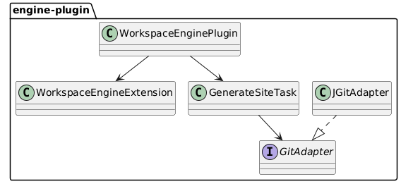
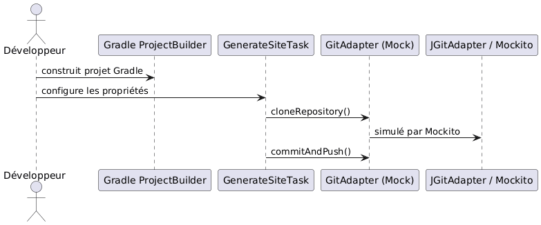

TDD of a configurable Kotlin Gradle Plugin with JBake and JGit
Published on 09 July 2025
This post presents the complete design and testing process (TDD) of a Gradle plugin written in Kotlin DSL. This plugin automates the generation of static sites with JBake and Git deployment via JGit, all from a YAML configuration file.
Objective
Create a Gradle plugin:
-
configurable in Kotlin DSL;
-
capable of:
-
generating a static site using JBake;
-
deploying to a remote Git repository via JGit;
-
integrable into a CI/CD workflow;
-
tested according to a TDD approach.
Declarative Configuration
Here is an example of a YAML configuration to model in our DSL:
bake:
srcPath: "./site/jbake"
destDirPath: "bake"
pushPage:
from: "bake"
to: "cvs"
repo:
name: "trainings"
repository: "https://github.com/pages-content/trainings.git"
credentials:
username: "USERNAME"
password: "SECRET_TOKEN"
branch: "main"
message: "cheroliv.com"This configuration is represented via a Gradle extension declarable in Kotlin DSL.
Plugin Architecture

DSL Extension Definition
open class WorkspaceEngineExtension {
var outputDir: String = "build/site"
var template: String = "freemarker"
var repoUrl: String = ""
var branch: String = "main"
var message: String = "Generated by engine"
}Custom Task Definition
abstract class GenerateSiteTask : DefaultTask() {
lateinit var gitAdapter: GitAdapter
@get:Input abstract val repoUrl: Property<String>
@get:InputDirectory abstract val outputDir: DirectoryProperty
@get:Input abstract val branch: Property<String>
@get:Input abstract val message: Property<String>
@TaskAction
fun run() {
val repo = gitAdapter.cloneRepository(repoUrl.get(), outputDir.get().asFile)
gitAdapter.commitAndPush(repo, branch.get(), message.get())
}
}GitAdapter Interface
interface GitAdapter {
fun cloneRepository(uri: String, directory: File): Repository
fun commitAndPush(repo: Repository, branch: String, message: String)
}Concrete Implementation with JGit
class JGitAdapter : GitAdapter {
override fun cloneRepository(uri: String, directory: File): Repository {
return Git.cloneRepository()
.setURI(uri)
.setDirectory(directory)
.call()
.repository
}
override fun commitAndPush(repo: Repository, branch: String, message: String) {
Git(repo).use {
it.add().addFilepattern(".").call()
it.commit().setMessage(message).call()
it.push().call()
}
}
}Kotlin DSL Configuration
workspaceEngine {
outputDir = "build/out"
template = "freemarker"
repoUrl = "https://github.com/cheroliv/trainings.git"
branch = "main"
message = "deploy from plugin"
}Unit Tests with Mockito
Dependencies
testImplementation("org.mockito:mockito-core:5.12.0")
testImplementation("org.mockito.kotlin:mockito-kotlin:5.2.1")
testImplementation("org.junit.jupiter:junit-jupiter:5.10.0")Testing Git Behavior
class GenerateSiteTaskMockitoTest {
@TempDir
lateinit var tempDir: File
@Test
fun `task should call clone and commitAndPush`() {
val project = ProjectBuilder.builder().build()
val task = project.tasks.create("generateSite", GenerateSiteTask::class.java)
val mockGitAdapter = mock<GitAdapter>()
val mockRepo = mock<Repository>()
whenever(mockGitAdapter.cloneRepository(any(), any())).thenReturn(mockRepo)
task.gitAdapter = mockGitAdapter
task.repoUrl.set("https://github.com/cheroliv/test.git")
task.outputDir.set(project.layout.projectDirectory.dir(tempDir.name))
task.branch.set("main")
task.message.set("test commit")
task.run()
verify(mockGitAdapter).cloneRepository(eq("https://github.com/cheroliv/test.git"), any())
verify(mockGitAdapter).commitAndPush(eq(mockRepo), eq("main"), eq("test commit"))
}
}
Conclusion
The separation of responsibilities via`GitAdapter`allows for the full application of TDD in Gradle plugin development:
-
Git calls are abstracted and testable;
-
the DSL configuration is clean and clear;
-
the plugin remains agnostic of the actual implementation.
This approach ensures high testability and extensibility (towards GitHub API, GitLab, etc.).
Next Steps
-
Integrate JBake generation as a`BakeAdapter`
-
Add integration tests with`GradleRunner`
-
Support the automatic loading of`site.yml`files via SnakeYAML